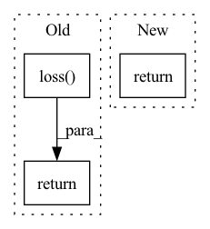

Pattern ID :1120

Before Change
src = torch.ones_like(label.unsqueeze(1), dtype=inp.dtype, device=inp.device) - self.m
sigma.scatter_(dim=1, index=label.unsqueeze(1), src=src)
return self.loss(a * (inp - sigma) * self.gamma, label)
if __name__ == "__main__":
feature = torch.rand(32, 128)
After Change
sp.backward(gradient=z * ap * torch.softmax(logit_p, dim=0))
sn.backward(gradient=z * an * torch.softmax(logit_n, dim=0))
return loss.detach()
if __name__ == "__main__":
In pattern: SUPERPATTERN
Frequency: 4
Non-data size: 3
Instances
Fragment ID: 4040229
Project Name: tinyzeamays/circleloss
Commit Name: 9c909ec6274b1c9c139a62f9f84ecf91c5edee35
Time: 2020-04-03
Author: 1049793129@qq.com
File Name: circle_loss.py
M Class Name: CircleLoss
N Class Name: CircleLossBackward
M Method Name: forward(3)
N Method Name: forward(3)
M Parent Class: nn.Module
N Parent Class: nn.Module
M File Name: circle_loss.py
N File Name: circle_loss.py
M Start Line: 23
M End Line: 34
N Start Line: 43
N End Line: 58
'>
Before Change
X_ = self.linear1(X_)
X_ = F.relu(X_)
y = self.linear2(X_[target_x])
loss = self.loss(y, target)
return loss, y, Ws
class GTLayer(nn.Module):
After Change
X_ = self.linear1(X_)
X_ = F.relu(X_)
y = self.linear2(X_)
return y
class GTLayer(nn.Module):
'>
Fragment ID: 4040228
Project Name: bupt-gamma/openhgnn
Commit Name: 51823d529be6db0eb8844c1c0f417b267644c197
Time: 2021-03-01
Author: theheavenszhao@outlook.com
File Name: openhgnn/model/GTN.py
M Class Name: GTN
N Class Name: GTN
M Method Name: forward(2)
N Method Name: forward(5)
M Parent Class: nn.Module
N Parent Class: nn.Module
M File Name: openhgnn/model/GTN.py
N File Name: openhgnn/model/GTN.py
M Start Line: 70
M End Line: 96
N Start Line: 68
N End Line: 99
'>
Before Change
(creators_1d, destroyers_1d), 1
)
loss = self.loss(
[persistence_diagram_0d, persistence_diagram_1d]
)
return loss
After Change
// [persistence_diagram_0d, persistence_diagram_1d]
//)
return [persistence_diagram_0d, persistence_diagram_1d], self.pd_target
'>
Fragment ID: 4040227
Project Name: aidos-lab/pytorch-topological
Commit Name: 9984e5cae422166c33a6549a058b31d68585563b
Time: 2021-12-10
Author: bastian@rieck.me
File Name: pytorch_topological/nn/vietoris_rips.py
M Class Name: ModelSpaceLoss
N Class Name: VietorisRips
M Method Name: forward(1)
N Method Name: forward(1)
M Parent Class: nn.Module
N Parent Class: nn.Module
M File Name: pytorch_topological/nn/vietoris_rips.py
N File Name: pytorch_topological/nn/vietoris_rips.py
M Start Line: 90
M End Line: 102
N Start Line: 85
N End Line: 97
'>
Before Change
src = torch.ones_like(label.unsqueeze(1), dtype=inp.dtype, device=inp.device) - self.m
sigma.scatter_(dim=1, index=label.unsqueeze(1), src=src)
return self.loss(a * (inp - sigma) * self.gamma, label)
def convert_label_to_similarity(normed_feature: Tensor, label: Tensor) -> Tuple[Tensor, Tensor]:
similarity_matrix = normed_feature @ normed_feature.transpose(1, 0)
After Change
loss = self.soft_plus(torch.logsumexp(logit_n, dim=0) + torch.logsumexp(logit_p, dim=0))
return loss
if __name__ == "__main__":
'>
Fragment ID: 4040226
Project Name: tinyzeamays/circleloss
Commit Name: 61758eefe091cf44f4de87aadd84fcb2bc377f94
Time: 2020-04-04
Author: 1049793129@qq.com
File Name: circle_loss.py
M Class Name: CircleLossLikeCE
N Class Name: CircleLoss
M Method Name: forward(3)
N Method Name: forward(3)
M Parent Class: nn.Module
N Parent Class: nn.Module
M File Name: circle_loss.py
N File Name: circle_loss.py
M Start Line: 24
M End Line: 35
N Start Line: 28
N End Line: 39